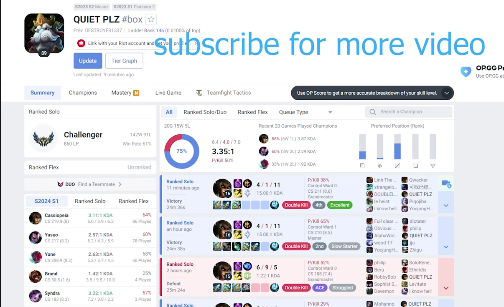

About Me
A bit about my interests outside of academics and more generally what I'm up to these days. This page will likely change over time as I update it with new experiences.
League of Legends

I vividly remember the day I first played the game. It was fourth grade, and we ("we" as in me and my brother, it's on him, really) had a snow day. And... that was the day everything changed. I downloaded the game, was hooked instantly, and have been playing on and off ever since.
I started taking ranked seriously a couple years back. I think the earlier years of "playing for fun" were important for my development as I was still able to learn a lot about tiny champion interactions that I think I take for granted (I especially notice this when coaching less experienced players...). Anyways from probably, say, 2022-2024 I was really into it competitively. I used to fall asleep watching pro player VODs- anytime I wasn't studying my academics I was studying the game. In 2024 I hit top 50 and ended the season challenger which was pretty cool. I try not to be too results oriented about things, but it was a nice milestone and still serves as an undefeated conversation starter.
In an interview with Chovy, one of the world's strongest players, he says that the most important thing when it comes to lane is "mental warfare". I agree with this wholeheartedly, LoL is a very frusturating game and if you're new to eSports (or anything else competitive in nature) in general it's easy to get frusturated and quit for reasons outside of the (lovely) game itself. I unironically went through a philosophical journey before I was able to really climb, some tips of which i'll share below:
- Try your best to dissociate with the outcome (winning/losing). Notice I said try? I realize this is impossible, but this is part of dissociating with things out of your control. I promise if you try your best in any given game state, there will always be something to learn. This will give you an edge over those (most) who mentally quit when things don''t go their way.
- Play no more than 2-3 champions at once. I think the sweet spot, if your goal is to IMPROVE at the game, is to play 2-3 champions. One-tricking is like "overfitting" and you would probably climb higher, but you'll be "elo-inflated" and your view on the game will be extremely subjective, only through the lens of your one champion. I'd argue at a certain point you'd improve more playing something else and getting a different perspective to see things on, I say this from experience, personally first hitting GM as a Yasuo one trick, then breaking challenger when I picked up Cassiopeia and Yone. I know it's annoying, but trust me you'll agree if you do it yourself. As for playing more than 3 champions, this is just too much. Unless you want to go pro, you'll never be able to compete with those who ARE and play 12+ hours a day. Even if you think you're some sort of super talent I promise its infeasible, don't forget most of these guys are phenoms themselves. :/
- View the game through the lens of game theory. Seriously, this is probably the biggest one. In coaching this is easily the best way I've found to explain the game. I think it's also pretty intuitive for most people, they just don't distill actions down far enough where most of the tangible insight is. For example, general rules are based on game theory right? Let's say at a given game state, "go fight the dragon in 30s" is optimal. Okay, general rule, simple enough for anyone to understand. But let's break it down further. I can pause the game at ANY point, and ask the student "what should you do here?" and they will probably say "go fight the dragon!" and I will say, okay, but HOW do you put yourself in a position, to where you can best fight the dragon in 15s? Do you already see how in recursively breaking down the game into smaller and smaller decisions, we can OBJECTIVELY describe how best to play? Even further, how about if I pause the game and ask "where is your best next mouse click?" our goal at this level is probably to hit the enemy or hit the wave, and of course this is to ultimately put ourselves in an ideal position to go fight the dragon.
- Be kind to yourself. You should be constantly reflecting on your decisions throughout a game to better your judgement for future games, but understand that you're not going to be perfect. The act of striving for perfection is what matters here- not actually being perfect (which is impossible), again, think back to tip 1.
Sports
I wouldn't say being an athlete is a strong part of my identity, but I did used to play select baseball in seventh grade. Nowadays I'm more into boxing, I wanted something more individual since I already had a lot of team experience with LoL and baseball. I'd also argue it's the best sport to watch. It's not as mentally engaging as say, baseball, where there are so many games in a season and you really need to follow most of them to develop a strong sentiment of how "good" a team is (the standings usually aren't reflective, you need like a domain intuition that can only really be developed through following the games). With boxing it's more like every few months there's a big fight and you can just put it on with some friends, which is chill.